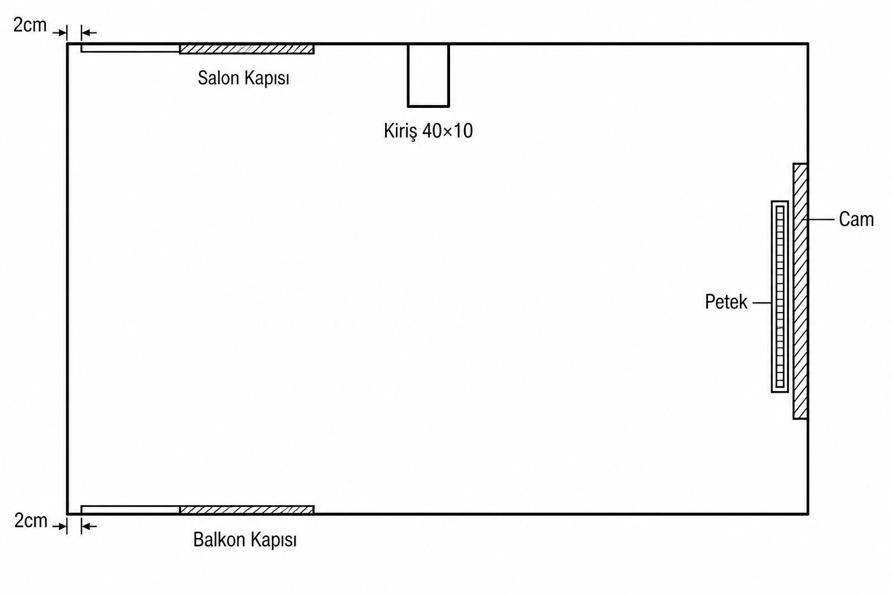

2 cm → Salon → 5 cm → Kiriş
Sol duvardan 2 cm sonra salon kapısı. Kapıdan sonra 5 cm, sonra kiriş: duvar boyunca 40 cm, odaya 10 cm çıkıntı. Girinti yok.
Kapı hizası ve kiriş netleşti. Uydurma girinti kaldırıldı.

Sol duvardan 2 cm sonra salon kapısı. Kapıdan sonra 5 cm, sonra kiriş: duvar boyunca 40 cm, odaya 10 cm çıkıntı. Girinti yok.
Sol duvardan 2 cm sonra balkon kapısı — salon ile aynı sol hiza. Sonra düz duvar sağa.
Cam açıklığı; petek odanın içinde cama bitişik.
Boş. İki kapı bu duvardan 2 cm içeride başlar.
Dar masa; petek önü açık.
Kapı yok; BESTÅ veya kanepe.
Sadece çıkıntı — altına/yanına yaslanma; girinti deposu yok.
İki kapının iç açılım yayları boş kalır.